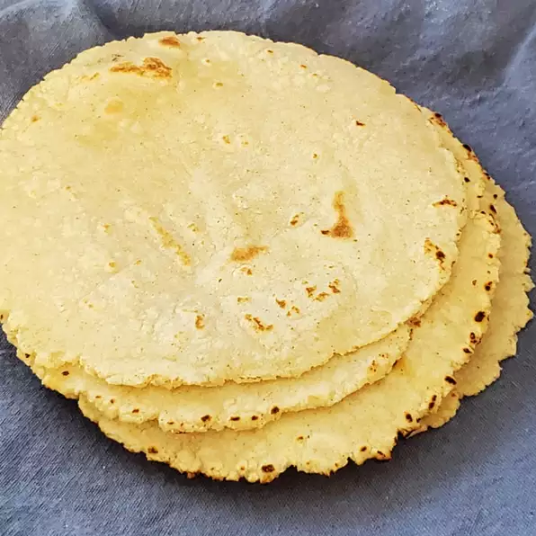

Here's my technique for making excellent corn tortillas every time! It takes some practice to master, but even the lousiest homemade corn tortilla is better than those cardboard store-bought ones. Make sure to let the dough rest so that it puffs up nicely while cooking.
Add masa harina to a large bowl. Sprinkle in salt and add hot tap water. Stir mixture with your fingers until dough starts to pull together.
Knead for a few minutes to smooth it out until texture resembles modeling clay or putty. Add more water if dough is too dry and more flour if too wet.
Place a damp towel and over the dough to keep it from drying out. Let rest for 20 to 30 minutes.
Cut a zip-top bag into 2 rounds the same size as your tortilla press. Place 1 round on the bottom of the press.
Place a clean kitchen towel over a pie dish for holding the cooked tortillas later.
Pull off a little piece of the dough, enough to roll into a 1 1/2-inch or 1-ounce ball. Remove the top round of plastic, place dough ball in the center of the bottom round, and press down lightly. Cover dough with the top piece of plastic.
Fold the tortilla press over, apply pressure to the lever arm until tortilla flattens to your desired thinness.
Peel off the top piece of plastic. Line up the index finger of your dominant hand with the edge of the tortilla; flip it over into your other hand. Carefully peel off the plastic.
Gently slide tortilla, palm-up, into a hot, dry pan over medium- to medium-high heat. Cook first side for 30 to 45 seconds. Turn over and cook second side for 1 minute. Flip and press once or twice with a spatula until tortilla puffs up slightly. Cook for 30 seconds more. Flip one last time and cook for 5 to 10 seconds.
Quickly transfer tortilla to the pie dish and fold the towel over to wrap it up. Repeat pressing and cooking the rest of the tortilla dough, stacking and wrapping as you go.
Leave the stack of tortillas wrapped until soft and supple, at least 15 minutes.
Per Serving: 42 calories; protein 1.1g; carbohydrates 8.7g; fat 0.4g; sodium 97.1mg.